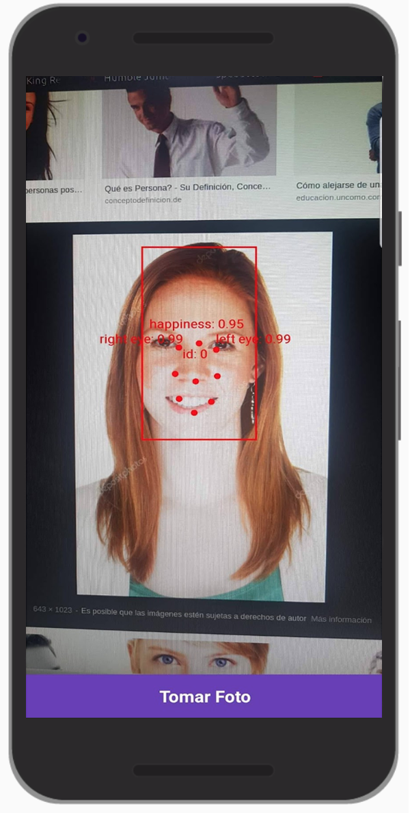
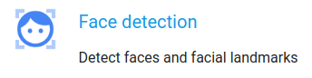

|

 |
Bienvenidos al workshop de Firebase + Android workshop. En este workshop, aprenderás como usar la plataforma de Firebase que podria ayudarte en el desarrollo de tu aplicacion Android. En este workshop implementaremos un inicio de sesion, implementacion de base de datos en tiempo real, notificaciones y algunas librerias de machine learning que nos proporciona Firebase
Que aprenderas?
- Permitir que los usuarios puedan iniciar sesión.
- Implementar una base de datos, ingresar data y visualizarlo en la aplicación en modo de lista.
- Recibir notificaciones en la aplicación.
- Implementar las librerías de machine learning reconocimiento de texto y de caras.
Qué necesitas?
- Android Studio 3.0+
- El código de ejemplo.
- Un dispositivo Android con la versión 4.0+ y con Google Play Services 9.8 o posterior, o un emulador con Google Play Services 9.8 o posterior.
- Si usas un dispositivo, un cable para conectarlo.
Clona el repositorio desde GitHub con el siguiente línea de comando.
git clone https://github.com/itlab/firebase-exampleLa mayoría de las apps necesitan identificar a los usuarios. Conocer la identidad de un usuario permite que una app guarde sus datos en la nube de forma segura y proporcione la misma experiencia personalizada en todos los dispositivos del usuario.
Firebase Authentication proporciona servicios de backend, SDK fáciles de usar y bibliotecas de IU ya elaboradas para autenticar a los usuarios en tu aplicación. Admite la autenticación mediante contraseñas, números de teléfono, proveedores de identidad federados populares, como Google, Facebook y Twitter, y mucho más.
Firebase Authentication se integra estrechamente con otros servicios de Firebase y aprovecha los estándares de la industria como OAuth 2.0 y OpenID Connect, por lo que se puede integrar fácilmente con tu backend personalizado.
Funciones Principales
- Se integra con otras funciones de Firebase.
- Usa estándares de la industria, como OAuth 2.0 y OpenID Connect, para que pueda integrarse fácilmente a tu sistema back-end personalizado.
- Ofrece dos opciones de desarrollo, ya sea FirebaseUI como una solución de autenticación fácil de implementar o el SDK de Firebase Authentication para integrar de forma manual uno o varios métodos de acceso a tu app.
- Brinda autenticación segura que facilita el acceso de los usuarios mediante su cuenta de Google en la que ya usan Gmail, Google Play, Google+ y otros servicios de Google. También admite la autenticación por contraseñas y proveedores de identidad populares como Facebook y Twitter.
- Ofrece una experiencia en la app sin dificultades entre dispositivos y en tu sitio web de manera segura y con un consentimiento único. De esta forma, mantendrás comprometidos a tus usuarios independientemente del dispositivo que utilicen.
- Conecta a los usuarios de forma segura con los servicios de Google. Comparte con Contactos de Google, guarda archivos en Drive, agrega eventos a Calendario y mucho más.
Instalar Firebase SDK
Modificar algunas reglas en el archivo build.gradle de nivel raiz:
Reemplaza estas lineas
buildscript{
// ...
dependecies{
// ...
// google-services plugin
}
}
allprojects{
// ...
reositories{
// ...
// Google's Maven repository
}
}Por esta
buildscript{
// ...
dependecies{
// ...
classpath 'com.google.gms:google-services:4.1.0'
}
}
allprojects{
// ...
reositories{
// ...
google()
}
}
Luego, en el archivo Gradle de tu módulo (generalmente, app/build.gradle), agrega la línea apply plugin en la parte inferior del archivo para habilitar el complemento de Gradle:
Reemplaza estas líneas
apply plugin: 'com.android.application'
android {
// ...
}
dependencies {
// ...
// Add dependency firebase-core
// Getting a "Could not find" error? Make sure you have
// added the Google maven respository to your root build.gradle
}
// Add plugin google-services
Por estas
apply plugin: 'com.android.application'
android {
// ...
}
dependencies {
// ...
implementation 'com.google.firebase:firebase-core:16.0.4'
// Getting a "Could not find" error? Make sure you have
// added the Google maven respository to your root build.gradle
}
// ADD THIS AT THE BOTTOM
apply plugin: 'com.google.gms.google-services'
Añadir Firebase Authentication
Añadir dependencia para autenticación en el archivo build.gradle:
Reemplazar esta línea
// Añadir dependencia de Firebase Authentication
Por esta
implementation 'com.google.firebase:firebase-auth:16.0.4'
Añadir aplicación a Firebase console
- Loguearse en firebase console con tu cuenta de correo de Gmail
- En la pantalla de inicio de Firebase Console, dar click en el botón "Agregar proyecto"
- En el pop-up emergente, realizar la siguiente configuración:
- Una vez realizada la creación del proyecto, se abrirá la página de inicio del proyecto en firebase. En esta se deberá añadir el proyecto que estamos desarrollando, para lo cual debemos hacer click en el icono Android que se muestra a continuación:
- A continuación, se mostrará un formulario con 4 pasos, en el primero solo debemos agregar el nombre del paquete de la aplicación. El cual se muestra en el archivo AndroidManifest.xml.
- Descargar el archivo de configuración google-services.json y posteriormente colocarlo en tu proyecto de la siguiente manera
Loguear usuario con Firebase
Para poder probar las distintas funcionalidades de la aplicación, lo primero que se debe hacer es loguearse en la aplicación, para que esto pueda ser posible, en la clase LoginPresenter vamos a reemplazar el siguiente código:
Reemplazar esta línea
// Declarar instancia de FirebaseAuth
Por esta
private val mAuth = FirebaseAuth.getInstance()
Reemplazar esta línea
// Logear usuario en firebase
Por estas
if (!email.isEmpty() && !password.isEmpty()) {
mAuth.signInWithEmailAndPassword(email, password).addOnCompleteListener(view) { task ->
run {
if (task.isSuccessful) {
view.correctLogin()
} else {
view.incorrectLogin("Fallo de autenticación")
}
}
}
} else {
view.incorrectLogin("Ingresar credenciales")
}
Reemplazar esta línea
// verificar si el usuario ya esta logueado
Por estas
if (mAuth.currentUser != null) {
view.correctLogin()
}
Registrar usuario con Firebase
Para poder realizar login a la aplicación, primero debemos tener una cuenta registrada. Para ello se deberán realizar las siguientes modificaciones al código de la aplicación en la clase RegisterPresenter.
Reemplazar esta línea
// Declarar instancia de FirebaseAuth
Por esta
private val mAuth = FirebaseAuth.getInstance()!!
Reemplazar esta línea
// Verificar el registro del usuario
Por estas
if (!name.isEmpty() && !password.isEmpty() && !email.isEmpty()) {
mAuth.createUserWithEmailAndPassword(email, password).addOnCompleteListener(view, {
task ->
run {
if (task.isSuccessful) {
// val values = toHashMap(name, email)
// createUserDBReference(task.result!!.user.uid, values)
view.correctRegister()
} else {
Log.i("Error",task.exception.toString())
view.incorrectRegister("Error en el registro")
}
}
})
} else {
view.incorrectRegister("Ingresar credenciales")
}Firebase brinda servicios de base de datos en tiempo real con soporte para plataformas Android, iOS y Web. Este servicio es en tiempo real y bastante fácil de usar. Además, la información también permanece en el dispositivo cuando este se queda desconectado del internet, ya que se almacena en el disco. También utilizaremos Firebase Storage que te permite almacenar imágenes y videos pesados.
Como funciona?
Firebase Realtime Database te permite compilar aplicaciones ricas y colaborativas, ya que permite el acceso seguro a la base de datos directamente desde el código del cliente. Los datos persisten de forma local. Además, incluso cuando no hay conexión, se siguen activando los eventos en tiempo real, lo que proporciona una experiencia adaptable al usuario final. Cuando el dispositivo vuelve a conectarse, Realtime Database sincroniza los cambios de los datos locales con las actualizaciones remotas que ocurrieron mientras el cliente estuvo sin conexión, lo que combina los conflictos de forma automática.
Realtime Database proporciona un lenguaje flexible de reglas basadas en expresiones, llamado reglas de seguridad de Firebase Realtime Database, para definir cómo se deberían estructurar los datos y en qué momento se pueden leer o escribir. Integrar Firebase Authentication permite que los programadores definan quién tiene acceso a qué datos y cómo acceden a ellos.
Realtime Database es una base de datos NoSQL y, como tal, tiene diferentes optimizaciones y funcionalidades en comparación con una base de datos relacional. La API de Realtime Database está diseñada para permitir solo operaciones que se puedan ejecutar rápidamente. Eso permite crear una excelente experiencia de tiempo real que puede servir a millones de usuarios sin afectar la capacidad de respuesta. Es importante pensar cómo deben acceder a los datos los usuarios y estructurarlos según corresponda.
Fuente: Documentación de Firebase
Instalar el Firebase Database en tu aplicación Android
- Si aún no lo hiciste, agrega Firebase a tu proyecto de Android.
- En Android Studio, agrega la dependencia de FCM al archivo build.gradle de nivel de tu app:
dependencies {
implementation 'com.google.firebase:firebase-database:16.0.3'
implementation 'com.firebaseui:firebase-ui-storage:4.1.0'
implementation 'com.google.firebase:firebase-storage:16.0.3'
}Estructura de la BD:
En este caso, los keys de usuario y contacts contendrán listas de datos donde se utilizaran los identificadores de cada persona como los keys para un acceso más fácil y rápido.
Registrar al usuario en la BD
Al registrar al usuario en la aplicación, vamos a crearle una entrada en la base de datos con su UID (Unique Identifier). Ubiquémonos en la siguiente ruta:
En el RegisterPresenter vamos a reemplazar el siguiente código:
//Firebase Database referencePor este:
//Firebase Database reference
val db = FirebaseDatabase.getInstance().referenceEsta es la referencia a la base de datos de nuestra aplicación que nos permite acceder a los datos contenidos en ella.
Seguido de esto creamos nuestra primera escritura a la base de datos con los datos del usuario, que ya se encuentran almacenados en un objeto tipo HashMap. Reemplacemos el siguiente código:
//Firebase Write DataPor este:
//Firebase Write Data
db.child("users/$uid").setValue(values)Aquí se crean los valores del nombre del usuario y su correo electrónico asociado a la cuenta.
Leer la data de los contactos
Vamos a implementar una lista de contactos simple con 4 datos: nombre, correo, teléfono y imágen de referencia (Esta última es opcional). En el archivo TimelinePresenter.kt reemplacemos esta parte del código:
//Firebase Database and Auth ReferencePor este:
//Firebase Database and Auth Reference
private val db = FirebaseDatabase.getInstance().reference
private val uid = FirebaseAuth.getInstance().currentUser!!.uid
Estas son las referencias a la base de datos de nuestra aplicación y al servicio de autentificación del cual obtenemos el uid del usuario actual.
Una vez hecho esto, podemos empezar con la lectura de datos. Se debe reemplazar esta línea de código:
//Firebase Database ReadPor esta:
//Firebase Database Read
db.child("users/$uid/contacts").addValueEventListener(object : ValueEventListener {
override fun onDataChange(p0: DataSnapshot) {
val contacts = ArrayList<Contact>()
if (p0.value != null) {
p0.children.forEach { dataSnapshot ->
run {
val name = dataSnapshot.child("name").value as String
val number = dataSnapshot.child("number").value as String
val email = dataSnapshot.child("email").value as String
val imagePath = dataSnapshot.child("imagePath").value as String
val contact = Contact(name, number, email, imagePath)
contacts.add(contact)
}
}
view.onContactsReady(contacts)
}
}
override fun onCancelled(p0: DatabaseError) {
Log.e("Test:", p0.toString())
}
})Aquí se adjunta un listener a la referencia de la BD para "escuchar" los valores de los contactos del usuario, que se encuentran en la ruta "users/$uid/contacts". Cada vez que se registra un cambio de valor o la agregación de nuevos valores a la lista de contactos se ejecuta la función onDataChange(p0: DataSnapshot) donde se crea una lista de Contactos, un objeto para almacenar los valores mencionados anteriormente.
Crear un nuevo Contacto
Ahora vamos a crear la parte más importante de la aplicación: la creación de contactos. Para esto, en el archivo FormPresenter.kt creemos las referencias a la BD y al Storage de Firebase. Además, obtengamos el UID del usuario y creamos un nuevo uid para el contacto. Reemplacemos este código:
///Firebase References and UIDsPor este:
///Firebase References and UIDs
private val db = FirebaseDatabase.getInstance().reference
private val storage = FirebaseStorage.getInstance().reference
private val uidUser = FirebaseAuth.getInstance().currentUser!!.uid
private val uidContact = UUID.randomUUID().toString()
private val path = "users/$uidUser/contacts/$uidContact"Seguido de esto, al igual que al registrar, creamos el código de guardar un contacto. Reemplacemos este código:
//Firebase WritePor este:
//Firebase Write
db.child(path).setValue(values)
view.onContactSaved()Por último, tenemos que realizar el código con el cual se cargara la imagen al Firebase Storage. Reemplacemos este código:
//Firebase Storage Image UploadPor este:
//Firebase Storage Image Upload
val imageRef = storage.child(path)
val baos = ByteArrayOutputStream()
image!!.compress(Bitmap.CompressFormat.JPEG, 100, baos)
val data = baos.toByteArray()
imageRef.putBytes(data).addOnSuccessListener {
view.onImageUploaded(imageRef.path)
}.addOnFailureListener { exception ->
Log.e("Firebase Storage Error", exception.localizedMessage)
}Este código es nuevo, por lo cual vamos a explicar su función. Primero, se crea una referencia a la locación donde se almacenará la imagen, la cual tendrá la misma dirección que en la BD, la cual se encuentra almacenada en la variable path. Después de comprimirla para reducir el espacio de almacenamiento, la imagen se transforma en un Array de Bytes y se realiza el upload de la imagen a Firebase.
Imagenes
Por último, las imágenes las manejaremos con una librería llamada Glide que se puede utilizar directo con objetos de Firebase. Para esto en el archivo GlideModuleStorage (Lo pueden encontrar en la carpeta Util) reemplacen las siguientes lineas de codigo:
// Register FirebaseImageLoader to handle StorageReferencePor estas:
// Register FirebaseImageLoader to handle StorageReference
registry.append(StorageReference.class, InputStream.class,
new FirebaseImageLoader.Factory());En el archivo ContactAdapter reemplacemos las siguientes lineas de código:
//Firebase Storage referencePor este:
//Firebase Storage reference
private val storage = FirebaseStorage.getInstance().referenceY esta:
//Firebase Storage UI GlidePor estas:
//Firebase Storage UI Glide
Glide.with(context)
.load(storage.child(contact.image!!))
.into(p0.ivContact)Ahora todo está listo y pueden compilar la aplicación en su dispositivo para probar los servicios de storage y database de Firebase.
Firebase Cloud Messaging (FCM) es una solución de mensajería multiplataforma que te permite enviar mensajes de forma segura y gratuita.
Con FCM, puedes notificar a una app cliente que un correo electrónico nuevo o que otros datos están disponibles para la sincronización. Puedes enviar mensajes de notificación para volver a atraer a más usuarios y aumentar su retención. Para los casos prácticos de mensajería instantánea, un mensaje puede transferir una carga de hasta 4 KB a una app cliente.
Cómo funciona
Una implementación de FCM incluye dos componentes principales para enviar y recibir datos:
- un entorno de confianza como Cloud Functions para Firebase o un servidor de apps para generar, orientar y enviar mensajes
- una app cliente de iOS, Android o Web (JavaScript) que reciba mensajes
Configurar una app cliente de Firebase Cloud Messaging en Android
- Si aún no lo hiciste, agrega Firebase a tu proyecto de Android.
- En Android Studio, agrega la dependencia de FCM al archivo build.gradle de nivel de tu app:
dependencies {
implementation "com.google.firebase:firebase-messaging:17.3.2"
}Creando el servicio de Firebase
El siguiente paso es crear dos servicios. Uno manejará el proceso de registro del dispositivo y el otro manejará la recepción de las notificaciones reales.
Vaya a su archivo AndroidManifest.xml y agregue el siguiente código dentro de la etiqueta <application>:
<service android:name=".notifications.NotificationService"
android:permission="com.google.android.c2dm.permission.SEND">
<intent-filter>
<action android:name="com.google.firebase.MESSAGING_EVENT" />
<action android:name="com.google.android.c2dm.intent.RECEIVE" />
</intent-filter>
</service>El código anterior representa la declaración del servicio dentro de nuestra aplicación, que nos permitirá ejecutar nuestro servicio apenas la aplicación inicie, y se mantendrá activo incluso si la aplicación es cerrada.
Dentro de la misma <application> etiqueta también puede agregar metadatos para los valores de notificación predeterminados, pero es opcional:
<meta-data
android:name="com.google.firebase.messaging.default_notification_icon"
android:resource="@drawable/ic_stat_ic_notification" />
<meta-data
android:name="com.google.firebase.messaging.default_notification_color"
android:resource="@color/colorAccent" />Lo último que debe agregar a su archivo de manifiesto (AndroidManifest.xml) es el permiso RECEIVE, el cual es necesario para permitir el funcionamiento del servicio:
<uses-permission android:name="com.google.android.c2dm.permission.RECEIVE" />Configurando el servicio
A continuación, agregue una clase Kotlin que declaró en el archivo manifiesto en un nuevo paquete llamado notifications.
Esta es la implementación de la clase NotificationService:
/************************************************************************
*
* Code required to start the codelab
*
* ************************************************************************/
class NotificationService : FirebaseMessagingService() {
private val DEMO_CHANNEL_ADMIN_ID = "el.id.de.tu.app.channel_demo"
private lateinit var notificationManager: NotificationManager
}El código arriba inicia con la implementación de la clase NotificationService y primero se declara una variable de nombre DEMO_CHANNEL_ADMIN_ID la cual más adelante nos servirá para crear un nuevo canal de notificación para las notificaciones que recibiremos en la app y además se declara una variable de nombre notificationManager que creará una instancia de la clase NotificationManager, la cual nos servirá más adelante para tratar las notificaciones que llegarán a nuestra app.
El siguiente paso es programar el siguiente código dentro de la implementación de la clase NotificationService e inmediatamente después de la declaración de la variable notificationManager.
override fun onNewToken(token: String) {
super.onNewToken(token)
Log.v("AuthFirebase", "Refreshed token: $token")
}Quedando de esta manera:
class NotificationService : FirebaseMessagingService() {
private val DEMO_CHANNEL_ADMIN_ID = "el.id.de.tu.app.channel_demo"
private var notificationManager: NotificationManager? = null
override fun onNewToken(token: String) {
super.onNewToken(token)
Log.v("AuthFirebase", "Refreshed token: $token")
}
}El código arriba implementa el evento onNewToken el cual obtiene un token de Firebase, creando así la conexión entre el dispositivo y Firebase. A través de este token, puede enviar notificaciones a este dispositivo específico.
Este token podría servirnos para, por ejemplo, enviarlo a un servicio y guardarlo en una base de datos generando una lista de posibles destinatarios específicos de nuestra aplicación.
Luego de implementar el evento programamos el siguiente código:
override fun onMessageReceived(remoteMessage: RemoteMessage) {
notificationManager = getSystemService(Context.NOTIFICATION_SERVICE) as NotificationManager
val notificationId = Random().nextInt(60000) + (System.currentTimeMillis() and 0xfffffff).toInt()
val title = remoteMessage.notification?.title
val message = remoteMessage.notification?.body
val defaultSoundUri = RingtoneManager.getDefaultUri(RingtoneManager.TYPE_NOTIFICATION)
val notificationBuilder = NotificationCompat.Builder(this, DEMO_CHANNEL_ADMIN_ID)
.setSmallIcon(R.drawable.ic_notifications_active)
.setContentTitle(title)
.setContentText(message)
.setAutoCancel(true)
.setSound(defaultSoundUri)
notificationManager.notify(notificationId, notificationBuilder.build())
}Aquí, para recibir notificaciones únicas cada vez que reciba un nuevo mensaje, para efectos de este codelab, generamos un número aleatorio y lo usamos como ID de notificación. Con esta identificación, se pueden hacer varias cosas con las notificaciones. Como tal, probablemente se deberían agrupar si son del mismo tipo, o actualizarlas. Si desea ver cada notificación individualmente de las demás, sus ID deben ser diferentes.
Luego se declaran dos variables: una de nombre title para recibir el título de la notificación, y otra de nombre message para recibir el mensaje de la notificación. Adicionalmente se declara una variable defaultSoundUri para que un sonido por defecto se reproduzca cuando la notificación llegue.
Ahora concentrémonos en esta parte:
val notificationBuilder = NotificationCompat.Builder(this, DEMO_CHANNEL_ADMIN_ID)
.setSmallIcon(R.drawable.ic_notifications_active)
.setContentTitle(title)
.setContentText(message)
.setAutoCancel(true)
.setSound(defaultSoundUri)
Lo que se está realizando aquí es construir una notificación en el área de notificaciones de Android con los datos recibidos de Firebase. Al construir una notificación, hacemos uso de NotificationCompat.Builder asignando la variable de configuración DEMO_CHANNEL_ADMIN_ID asignada pasos atrás, indicando si queremos, como en este ejemplo:
- Hacer que nuestra notificación tenga un icono, con el método setSmallIcon.
- Darle un título a la notificación, con el método setContentTitle.
- Darle el contenido del mensaje a la notificación, con el método setContentText.
- Indicar que la notificación se desvanecerá una vez se toque sobre ella aplicando el valor true al método setAutoCancel.
- Indicar el sonido de la notificación.
Luego de ello, se procede a agregar la notificación recién construida al centro de notificaciones de Android, a través de las siguientes líneas de código.
notificationManager.notify(notificationId, notificationBuilder.build())El código de la clase NotificationService finalmente debería quedar de la siguiente forma:
class NotificationService : FirebaseMessagingService() {
private val DEMO_CHANNEL_ADMIN_ID = "com.example.itlab.authenticationfirebaseapp.channel_demo"
private lateinit var notificationManager: NotificationManager
override fun onNewToken(token: String) {
super.onNewToken(token)
Log.v("AuthFirebase", "Refreshed token: $token")
}
override fun onMessageReceived(remoteMessage: RemoteMessage) {
notificationManager = getSystemService(Context.NOTIFICATION_SERVICE) as NotificationManager
val notificationId = Random().nextInt(60000) + (System.currentTimeMillis() and 0xfffffff).toInt()
val title = remoteMessage.notification?.title
val message = remoteMessage.notification?.body
val defaultSoundUri = RingtoneManager.getDefaultUri(RingtoneManager.TYPE_NOTIFICATION)
val notificationBuilder = NotificationCompat.Builder(this, DEMO_CHANNEL_ADMIN_ID)
.setSmallIcon(R.drawable.ic_notifications_active)
.setContentTitle(title)
.setContentText(message)
.setAutoCancel(true)
.setSound(defaultSoundUri)
notificationManager.notify(notificationId, notificationBuilder.build())
}
}
Probando nuestra aplicación
Para probar la aplicación haremos click en el menú "Run" y luego en "Run app". La aplicación deberá ejecutarse en nuestro dispositivo asignado.
Luego ingresamos a la consola de Firebase y nos dirigimos a la sección de "Crece", luego hacemos click en "Cloud Messaging", nos deberá mostrar la siguiente pantalla:
Haremos click en "Envía tu primer mensaje", nos mostrará lo siguiente:
Este formulario nos permitirá crear un nuevo mensaje para probar si nuestra aplicación realmente estará recibiendo las notificaciones. En el campo "Ingresar mensaje" digite un mensaje a su gusto.
Opcionalmente puede ingresar un sobrenombre o alias al mensaje para identificarlo en el listado de mensajes que aparecerá cuando este mensaje haya sido enviado.
En la parte inferior encontraremos lo siguiente:
Esta sección del formulario nos indica hacia qué destino se enviará el mensaje, existiendo para esto tres tipos de destino:
- Segmento de usuario: Esta opción nos permitirá enviar una notificación a todos los usuarios de la aplicación o un segmento en específico.
- Tema: Mecanismo Pub/Sub para enviar notificaciones a los suscriptores. Esta opción nos permitirá enviar notificaciones a sólo los usuarios suscritos a un tema.
- Dispositivo único: Esta opción sirve en caso sepamos el identificador de Firebase de un dispositivo o usuario en específico.
Para efectos de este codelab, dejaremos seleccionada la opción "Segmento de usuarios".
A continuación daremos click en el campo "Seleccionar app" y seleccionaremos el nombre de nuestra aplicación.
Siguiendo con el formulario encontraremos al final un campo llamado "Opciones avanzadas", haremos click allí y se nos mostrará lo siguiente:
Todos los campos en este cuadro son opcionales, sin embargo, para efectos de este codelab, llenaremos el campo "Título" con algún término que queramos usar de título de nuestro mensaje.
Luego, daremos click en "Enviar mensaje", lo siguiente será este cuadro de diálogo:
Este cuadro de diálogo nos ayuda a hacer una revisión del tiempo de entrega, fecha y hora de vencimiento y hacia dónde será enviado el mensaje. Si todo está conforme, hacer click en "Enviar".
Finalmente nos aparecerá el listado de mensajes enviados:
Y en nuestra app debería aparecer lo siguiente:
ML Kit es una librería de machine learning para los desarrolladores de dispositivos móviles como Android o iOS de manera fácil que fue presentada en Google I/O 18. Esta librería tiene las siguientes APIs que se pueden integrar en las aplicaciones:

Face detection
Face detection es una API, donde podras detectar rostros que se encuentren en una imagen e identificar sus principales características que son:
- Reconocer y localizar características faciales
- Reconocer expresiones faciales.
- Seguir una cara en un video.
- Procesar un video en tiempo real.
La aplicación que se realizara en este codelab podrá tomar una foto e identificar las caras de las personas que se encuentran en esa foto, mostrar el porcentaje de la apertura del ojo izquierdo y derecho y el porcentaje de la felicidad de la persona.
Actualmente la aplicación tiene un botón para ir a la pantalla, donde si se presiona el botón "Tomar Foto" solo toma la foto y lo muestra en la pantalla.
Instalar Librería
Entonces, primero en el build.gradle se deberá ingresar la librería de la siguiente manera.
Reemplaza esta linea
//Firebase ML KitPor estas
//Firebase ML Kit
implementation 'com.google.firebase:firebase-ml-vision:17.0.1'Además, debemos agregar en el AndroidManifest.xml que API del ML KIT usaremos, para ello esto se ingresa de la siguiente manera para el caso del API face detection.
Reemplaza esta linea
<!--Ingresar la dependencia de ML KIT-->Por esta
<meta-data
android:name="com.google.firebase.ml.vision.DEPENDENCIES"
android:value="face" />Inicializar librería
El primer paso es inicializar las opciones de la librería, para ello se ingresara el siguiente codigo en la clase FaceDetectionFirebase.kt que se encuentra en la carpeta utils
Reemplaza esta linea
/** Opciones de la libreria */Por esto
/** Opciones de la libreria */
val options = FirebaseVisionFaceDetectorOptions.Builder()
.setModeType(FirebaseVisionFaceDetectorOptions.ACCURATE_MODE)
.setLandmarkType(FirebaseVisionFaceDetectorOptions.ALL_LANDMARKS)
.setClassificationType(FirebaseVisionFaceDetectorOptions.ALL_CLASSIFICATIONS)
.setMinFaceSize(0.15f)
.setTrackingEnabled(true)
.build()El segundo paso es obtener la imagen que se ha tomado , para ello primero debemos enviar la imagen tomada desde la clase MLActivity.kt a la clase FaceDetectionFirebase.kt
Reemplaza esto
pb.visibility = View.GONE
mCameraButton.isEnabled=true
/**Lógica para detectar rostros de la imagen*/Por esto
/**Lógica para detectar rostros de la imagen*/
mGraphicOverlay.setCameraInfo(ivPhoto.drawable.intrinsicWidth,ivPhoto.drawable.intrinsicHeight)
FaceDetectionFirebase(mGraphicOverlay).runFaceRecognition(bitmap) { callback->
/**Lógica para mostrar mensajes*/
pb.visibility=View.GONE
mCameraButton.isEnabled=true
}Luego en FacedetectionFirebase.kt
Reemplaza esta linea
/** Obtener la imagen tomada de la camara*/Por esto
/** Obtener la imagen tomada de la camara*/
val image = FirebaseVisionImage.fromBitmap(bitmap)El tercer paso es instanciar la librería en la clase FaceDetectionFirebase.kt
Reemplaza esto
/** Instanciar la libreria */Por esto
/** Instanciar la libreria */
val detector = FirebaseVision.getInstance().getVisionFaceDetector(options)Obtener Rostros
En la clase FaceDetectionFirebase.kt
Reemplaza esto
/** Detectar caras en la imagen */Por esto
/** Detectar caras en la imagen */
detector.detectInImage(image)
.addOnSuccessListener{ mensaje ->
processFaceRecognitionResult(mensaje){
callback(it) /** Retornar el mensaje de la funcion */
detector.close()
}
}
.addOnFailureListener{
callback(it.toString()) /** Retornar el error de Firebase */
detector.close()
}Y reemplaza esto
/** Funcion para dibujar Caras */Por esto
/** Funcion para dibujar Caras */
private fun processFaceRecognitionResult(firebaseVisionList: List<FirebaseVisionFace>,callback:(String)->Unit){
/** Limpiar la pantalla de lo anteriormente dibujado */
mGraphicOverlay.clear()
/** Comprobar que hay caras en la imagen */
if (firebaseVisionList.isEmpty()) {
callback("No se han detectado caras") /** Retornar que no se encontro caras */
return
}
/** Logica para dibujar cada cara */
callback("true") /** Retornar que fue exitoso */
}Dibujar Rostros
Para dibujar un cuadrado en cada rostro detectado se creará una clase llamada FaceGraphic.kt en la carpeta utils.
Ingresar el siguiente código en la clase FaceGraphic.kt
class FaceGraphic(overlay: GraphicOverlay,mostrarLandmarks: Boolean) : Graphic(overlay) {
private var facing: Int = 0
private val facePositionPaint: Paint
private val idPaint: Paint
private val boxPaint: Paint
private var mostrarLandmarks = false
@Volatile
private var firebaseVisionFace: FirebaseVisionFace? = null
/** Instanciar las variables que no se modificaran despues*/
companion object {
private val FACE_POSITION_RADIUS = 10.0f
private val ID_TEXT_SIZE = 40.0f
private val ID_Y_OFFSET = 50.0f
private val ID_X_OFFSET = -50.0f
private val BOX_STROKE_WIDTH = 5.0f
private val COLOR_CHOICES = intArrayOf(Color.BLUE, Color.CYAN, Color.GREEN, Color.MAGENTA, Color.RED, Color.WHITE, Color.YELLOW)
private var currentColorIndex = 0
}
/** Obtener el color para el cuadrado y los puntos de la cara */
init {
this.mostrarLandmarks = mostrarLandmarks
currentColorIndex = (currentColorIndex + 1) % COLOR_CHOICES.size
val selectedColor = COLOR_CHOICES[currentColorIndex]
facePositionPaint = Paint()
facePositionPaint.color = selectedColor
idPaint = Paint()
idPaint.color = selectedColor
idPaint.textSize = ID_TEXT_SIZE
boxPaint = Paint()
boxPaint.color = selectedColor
boxPaint.style = Paint.Style.STROKE
boxPaint.strokeWidth = BOX_STROKE_WIDTH
}
/**
* Agrega las caras detectadas al Canvas
*/
fun updateFace(face: FirebaseVisionFace, facing: Int) {
firebaseVisionFace = face
this.facing = facing
postInvalidate()
}
/** Dibuja el cuadrado y los puntos de la cara en el Canvas */
override fun draw(canvas: Canvas) {
val face = firebaseVisionFace ?: return
val x = translateX(face.boundingBox.centerX().toFloat())
val y = translateY(face.boundingBox.centerY().toFloat())
drawFaceSquare(canvas,face,x,y)
if(mostrarLandmarks) {
canvas.drawCircle(x, y, FACE_POSITION_RADIUS, facePositionPaint)
drawText(canvas,"id: " + face.trackingId, x + ID_X_OFFSET, y + ID_Y_OFFSET)
drawText(canvas,"happiness: " + String.format("%.2f", face.smilingProbability), x + ID_X_OFFSET * 3, y - ID_Y_OFFSET)
/** Logica de los ojos segun la camara que se este usando */
if (facing == CameraSource.CAMERA_FACING_FRONT) {
drawText(canvas,"right eye: " + String.format("%.2f", face.rightEyeOpenProbability), x - ID_X_OFFSET, y)
drawText(canvas,"left eye: " + String.format("%.2f", face.leftEyeOpenProbability), x + ID_X_OFFSET * 6, y)
} else {
drawText(canvas,"left eye: " + String.format("%.2f", face.leftEyeOpenProbability), x - ID_X_OFFSET, y)
drawText(canvas,"right eye: " + String.format("%.2f", face.rightEyeOpenProbability), x + ID_X_OFFSET * 6, y)
}
drawLandmarksFace(canvas,face)
}
}
private fun drawText(canvas: Canvas,string:String, x:Float, y:Float){
canvas.drawText(string,x,y,idPaint)
}
/** Dibuja el cuadrado alrededor de la cara*/
private fun drawFaceSquare(canvas: Canvas,face:FirebaseVisionFace, x:Float, y:Float){
val xOffset = scaleX(face.boundingBox.width() / 2.0f)
val yOffset = scaleY(face.boundingBox.height() / 2.0f)
val left = x - xOffset
val top = y - yOffset
val right = x + xOffset
val bottom = y + yOffset
canvas.drawRect(left, top, right, bottom, boxPaint)
}
/** Dibuja en la cara los diferentes puntos que detecta la libreria de firebase */
private fun drawLandmarksFace(canvas: Canvas,face: FirebaseVisionFace){
drawLandmarkPosition(canvas, face, FirebaseVisionFaceLandmark.BOTTOM_MOUTH)
drawLandmarkPosition(canvas, face, FirebaseVisionFaceLandmark.LEFT_CHEEK)
drawLandmarkPosition(canvas, face, FirebaseVisionFaceLandmark.LEFT_EAR)
drawLandmarkPosition(canvas, face, FirebaseVisionFaceLandmark.LEFT_MOUTH)
drawLandmarkPosition(canvas, face, FirebaseVisionFaceLandmark.LEFT_EYE)
drawLandmarkPosition(canvas, face, FirebaseVisionFaceLandmark.NOSE_BASE)
drawLandmarkPosition(canvas, face, FirebaseVisionFaceLandmark.RIGHT_CHEEK)
drawLandmarkPosition(canvas, face, FirebaseVisionFaceLandmark.RIGHT_EAR)
drawLandmarkPosition(canvas, face, FirebaseVisionFaceLandmark.RIGHT_EYE)
drawLandmarkPosition(canvas, face, FirebaseVisionFaceLandmark.RIGHT_MOUTH)
}
/** Dibuja los puntos */
private fun drawLandmarkPosition(canvas: Canvas, face: FirebaseVisionFace, landmarkID: Int) {
val landmark = face.getLandmark(landmarkID)
if (landmark != null) {
val point = landmark.position
canvas.drawCircle(
translateX(point.x!!),
translateY(point.y!!),
10f, idPaint)
}
}
}Y en la clase FaceDetectionFirebase.kt reemplazar esto
/** Logica para dibujar cada cara */Por esto
/** Logica para dibujar cada cara */
for(i in firebaseVisionList){
val textGraphic = FaceGraphic(mGraphicOverlay,true)
textGraphic.updateFace(i,0)
mGraphicOverlay.add(textGraphic)
}Mostrar Mensajes
Se mostraran mensajes en la pantalla si no se encontraron rostros o si hubo algun error con la libreria, para ello en la clase MLActivity.kt
Reemplaza esto
/**Lógica para mostrar mensajes*/Por esto
/**Lógica para mostrar mensajes*/
when(callback) {
"true"->{}
else->{
Toast.makeText(applicationContext,callback, Toast.LENGTH_SHORT).show()
mGraphicOverlay.clear()
ivPhoto.setImageDrawable(null)
}
}Gracias por probar el codelab de Android + Firebase, ahora intenta algo de tu imaginacion.